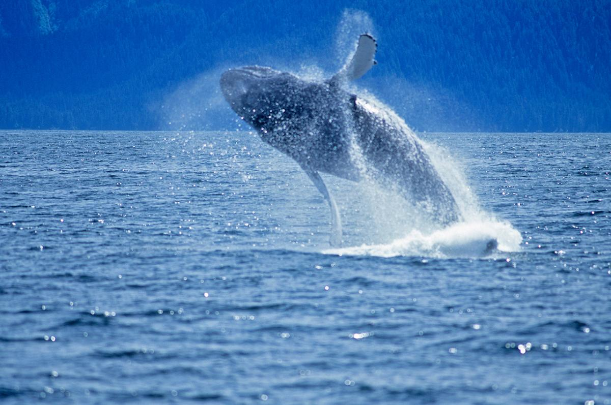
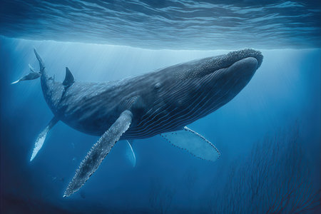
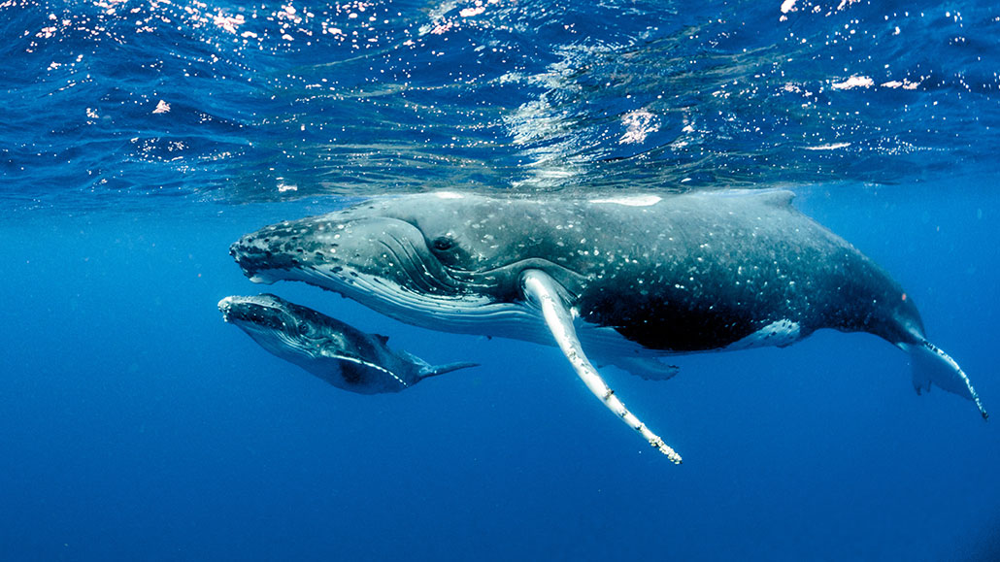
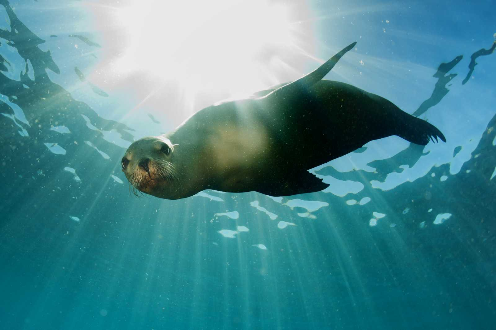

Starfish, also known as sea stars, are fascinating marine creatures that grace the world's oceans with their unique appearance and behavior. These captivating animals are not
actually fish but belong to a group of echinoderms. What sets them apart is their distinctive radial symmetry, with typically five arms extending from a central body, resembling a
celestial star. Starfish come in a variety of vibrant colors and are well-adapted to their underwater habitats, where they use tiny tube feet on their undersides to move and navigate.
They are voracious predators, often preying on mollusks and other small sea creatures by using their tube feet to pry open shells. Beyond their ecological role, starfish hold a special
place in marine folklore and scientific study, representing both the beauty and mystery of the oceans they inhabit.


Whales, the gentle giants of the oceans, are among the most remarkable and majestic creatures on Earth. These massive marine mammals, ranging from the colossal blue whale
to the charismatic humpback and the intelligent orca, capture our imagination with their sheer size and grace as they glide through the depths. Whales are known for their complex
social structures, impressive communication skills, and astounding migrations that span thousands of miles. Their haunting songs and playful breaches at the water's surface leave
an indelible mark on anyone fortunate enough to witness them in their natural habitat. Whales hold a vital ecological role, contributing to the balance of marine ecosystems and
serving as indicators of ocean health. However, they also face numerous threats, including habitat degradation, pollution, and whaling, making conservation efforts crucial to ensure
the survival of these magnificent creatures for future generations.
  Sea lions, with their endearing charm and lively personalities, are a charismatic presence along the world's coastlines. These sleek and agile marine mammals, belonging to the
pinniped family, are known for their playful behavior both in and out of the water. Sea lions have distinct external ear flaps and are often found in colonies, where they engage in social
interactions and vocalizations that range from deep roars to high-pitched barks. Their remarkable swimming abilities and powerful flippers allow them to glide gracefully through
the ocean, while their adaptability enables them to thrive in various coastal environments. From California's sunbathing sea lions to the breathtaking acrobatics of the Galapagos sea
lions, these captivating creatures continue to captivate the hearts of wildlife enthusiasts and serve as ambassadors for marine conservation efforts worldwide.


Jellyfish, with their ethereal and otherworldly appearance, are intriguing yet enigmatic creatures of the ocean. These gelatinous animals, found in oceans all around the world,
come in a variety of shapes, sizes, and colors. Drifting through the water with rhythmic pulsations, they are more than 95% water themselves, making them incredibly delicate and
fragile. Despite their seemingly simple structure, jellyfish have an ancient lineage dating back hundreds of millions of years, making them one of the oldest living creatures on Earth.
While their mesmerizing beauty has captivated many, some species can deliver painful stings with their tentacles, making them a subject of both fascination and caution for those
who venture into the seas. Jellyfish serve a crucial role in marine ecosystems, balancing the populations of other marine species and contributing to the intricate web of life in the
world's oceans. Their mysterious existence continues to inspire marine biologists and artists alike, reminding us of the vast wonders that lie beneath the surface of the seas.


Sea urchins, intriguing and prickly marine creatures, play vital roles in ocean ecosystems. These spiny, globe-shaped animals are echinoderms, closely related to sea stars and sea
cucumbers. Despite their outwardly intimidating appearance, sea urchins are fascinating creatures with a variety of adaptations. They use their tube feet and spines for locomotion
and protection. Sea urchins are primarily herbivorous, feeding on algae and kelp, and their grazing habits can significantly influence the structure of underwater habitats. They are
known for their intricate jaw apparatus called "Aristotle's lantern," which they use to scrape and ingest food. Additionally, sea urchins have economic importance in some regions, as
their roe, known as "uni," is considered a delicacy in sushi cuisine. These enigmatic creatures serve as essential components of marine ecosystems, and their study contributes to our
understanding of the complex interactions within underwater environments.